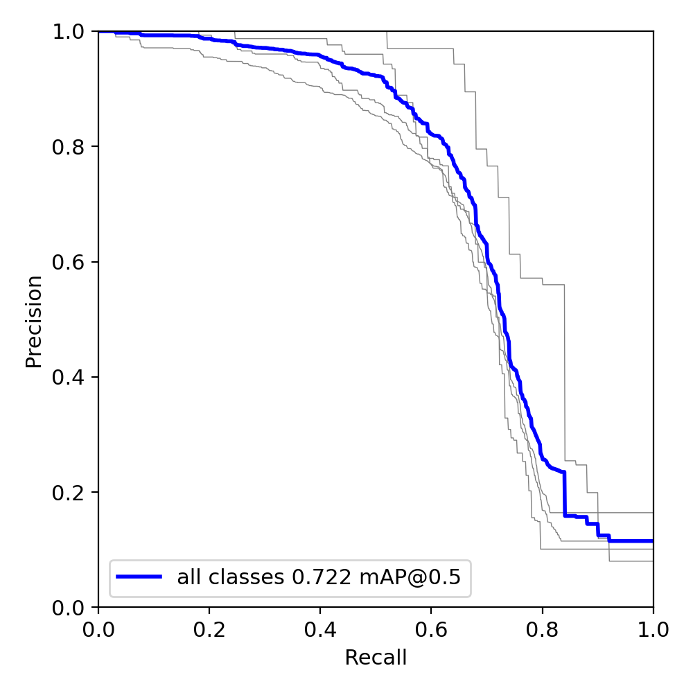
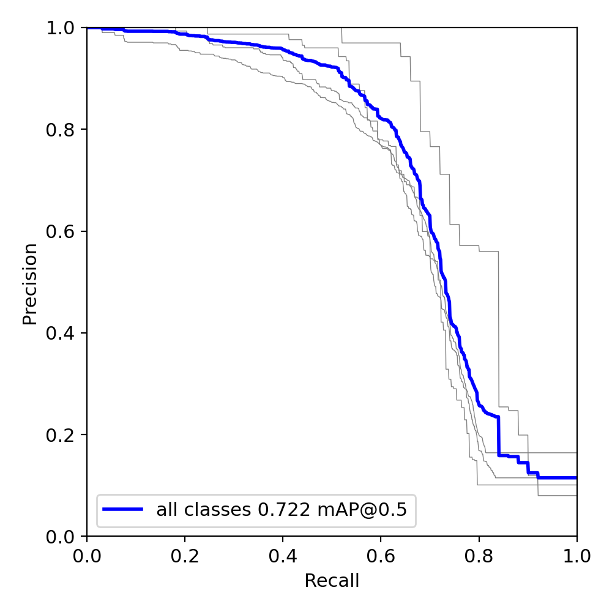

Intro:
Hi guys, I am Zhengqi, and you can call me Drago as well (It's a nickname that I picked up from a moive when I
was
first time travel to US. You can read more here, if you
are
interested). Currently, I am a software engineer intern at Yrobot. For my academic background, I earned my Computer
Science and Engineering bachelor's degree @ The Ohio State University
(with
a specialization in AI and a minor in Statistics), and a Master degree in Robotic
and Autonomous System @ Boston University. I am highly
interested in the area of AI/ML/DL, HPC, and with becoming a professional robotics engineer as my long-term goal
in
mind! Love to connect and grow with buddies sharing the same interests!
Objective: looking for an Full Time New Grad SDE position based on United States, expected
starting date: Jan - Mar, 2023.
News
2022-July:
If I couldn't find a good opportunity here by the end of Dec 2022, likely I will be joining Huawei.
2022-May:
I will be an intern for Y-Robot company (A robotic startup for
wearable
devices, read more here: src1, src2, src3, src4) this summer as a Software Engineer, at
Cambridge,
MA.
2022-Jan:
I will be a Course Assistant for DS/CS-519 -- Spark! Software Engineering X-Lab Practicum, helping Prof. Langdon
White
for general course errand, and holding office hour 10-12pm Thursday and Friday each week!
2021-Sep:
I will start my graduate study at Boston University toward Master of Science in Robotics and Autonomous System.
2021-April:
I will be giving a presentation at URF(Undergraduate Research Forum) on 4/1 (More details about URF
at Link) and another one at Denman Undergraduate Research Forum on Monday, April
5th, 2021, 4:00 pm–5:30 pm – Engineering: Physical Sciences Panel, register at here Link (More details about Denman
Undergraduate
Research Forum at Link) 2020-Aug: Employed as
Instruction Assistant for CSE 3461: Computer Networking and Internet Technologies
2020-Aug: I completed
a
Working Behavior test that is supported by Plum. It was a behavior test that
requested by Bloomberg Recruit Team. And, I think the result can say something about me!
Bachelor of
Computer Science and Engineering (Minor: Statistics & Specialization: AI)
Honor:
Graduated with Honor in Engineering, and Honor Research Distinction in Agricultural Engineering.
Thesis:
Image-Based Plant Leaf Disease Recognition with
InceptionV3 Network (Source)
GPA
3.65/4.0
(Audit Course Report, Course History)
Summary: Increased air, water, soil and sea pollution is still an big problem today. According to
the data forecasted by World Bank Group at
2018(p24), 2.59 billion tonnes of waste will be generated annually by 2030, and this number will be expected
to
reach 3.40 billion tonnes by 2050. In addition, based on the data reported by States
Environmental Protection Agency, there is less than 35% of recyclable waste is actually being recycled in
the
US. Due to high cost of waste management($50-$100 per tonnes), inadequate waste collection and uncontrolled dumping
or
burning of solid waste are still an unfortunated reality, polluting the air, waster, and soil in the world.
Therefore,
in this project, we are aiming at pushing on the barriers of automatic waste detection and sorting and try to
experiment different state-of-the-art detection model (both single-stage and two-stage detector) on the Zero Waste
dataset, the largest public waste detection dataset. At the end, three detection models were tested with some
customized pre-processing and data augmentation, and their performance all exceeds the baseline shown in the original paper that was published three monthes ago. Among them,
YOLOR
has achieved the best performance over all evaluation criteria and has outperformed TridentNet greatly, 2.57x higher
on AP and 5.92x higher on AP_small. The detailed benchmark and explanations are shown in the report!
2022Spring--BU CS585, Image Processing Challenge: Monocular camera based Visual Odometry(or Localization)
[Course Syllabus]
Technology: Django, React, Travis CI, Trello, TMDB(The movie database) and IBM Cloud
Description: The product is constituted by two modules: chatbot data collection and
recommendation system. The chatbot module will ask information from the user by initiating a series of
prepared
questions in human natural language, and users will answer those questions based on the requirements of the
recommendation system. The relevant questions might include: What actor do you like? What character do you
like?
What is the release date the user wants to watch (e.g. 1950-1990?) After the data collection is over, the
user
will be given preliminary suggestions, a list of recommended movies. The users will then give feedback as to
whether the suggestion is liked or not for further narrowing recommendation. The underlying recommendation
system
and natural language processing system are powered by the TMDB(The movie database) and IBM Cloud NLP module.
The
front-end of our application is developed with Reactm, and the back-end is created with Django.
2020Fall--CSE 5525 Speech and Language Processing Final Project, Hybrid Filtering Recommender System [Course Website]
Summary: In this project, we proposed a hybrid filtering movie recommendation system that combines
the idea of content-based filtering and collaborative filtering and integrated the representation learned from
multiple sources. While conducting the experiments, we explored the performance of text embedding methods by using
it as our text-embedding module, and designed unique metapaths and a novel rating-aware sampling policy for graph
embedding. Leveraging both text and graph contextual information, the system further improved the quality of
recommendation system compared to methods using single information source.
Professional Experiences
Software Engineer Intern, Yrobot lnc, Boston, MA, USA, June 2022 - Sep 2022
Designed and developed a File Transferring Simulator for company’s embedded system of wearable devices.
Wrote C++ code for dev board and Python code for client endpoint to establish a communication channel via TCP and X/Y/ZMODEM protocol, used CMake to build system and GTest for unit testing.
Implemented a Bayesian inference-based probability distribution model for foot placement prediction with Python
Software Developer Intern, BU Spark!, Boston, MA, USA, Sep 2021 - Jan 2022
Created a website that loads mutual aid resources from Postgres database, then displays all food
resources and
mutual aid locations around Greater Boston area in an interactive map by using mapbox API.
Designed and developed the front-end in Gatsby to improve user experience by adding multi-language
feature.
Deployed frontend via GitHub Pages with https secure access, and utilized Docker Compose to containerize
back-end application, then deployed on AWS EC2 instance, and secured the communication between frond-end
and
backed with TLS/SSL certificate.
Student Instructional Assistant, Ohio State University, Columbus, OH, Aug 2020 - Dec 2020
Grade students' homework and report basic statistics and common mistakes to the professor.
Answer students' questions by holding office hours and replying to emails.
WebMaster, Student Association of Graduate Engineers (SAGE) at Boston University, Aug 2021 -
Present
Coodinated with other e-board members to plan and organize two annual events (whale watching and
nutcracker)
Routinely updated and maintained SAGE's website, including event
news,
student activities, post, and relevant school information, by using WordPress Content Management System
(CMS).
Don't waste time dreaming of great far-away opportuniies; start to work and improve yourself right now. Someday
a
small opportuniies will come, and those are often the beginning of great and amazing things.
"运筹帷幄之中，决胜千里之外.” ― 西汉·司马迁
"A small group of dedicated people can change the world!" --A friend of mine
"Imagination is more important than knowledge." --Alber Einstein
"If I had an hour to solve a problem I'd spend 55 minutes thinking about the problem and five minutes thinking
about solutions." --Alber Einstein
"You MULTIPLY your time by giving yourself the EMOTIONAL PERMISSION to spend time on things TODAY that will give
you more time TOMORROW" --Rory Vaden
Get the most important thing done at first! -- "Organize Tommorrow Today"
"I am not afraid of a person who knows 10000 kicks. But I am afraid of a person who knows one kick but practices
it for 10000 times." --Bruce Lee
If you don't measure, you don't know; If you don't profile, you can't tell where it spent.
"Premature Optimization is the root of all evil." --Knuth
"When he talks, people listen"-- Warren Buffet
"Be fearful when others are greedy and greedy when others are fearful." -- Warren Buffet
"20% of your activitie will account for 80% of your results."" -- Pareto principle
"What doesn't kill you makes you stronger." -- Friedrich Nietzsche
"Don't see what they want you to see, you got to open your mind to the possibilities!" -- Bumi
"All good things are worth waiting for and worth fighting for.” ― Susan Gale
"我命由我不由天！.” ― Deep Memory
"Never sacrifice the long-term value for short-term results." -- Amazon Leadership Principles
Miscellaneous
Note: This website is still under development. I am consistently working on the Front-end design of different
components, background themes, and try to integrate more meaningul functionality and features to make it
looks
more
professional and easy to navigate! (Search bar is not implemented, please bear with me!)
Note: I am using the Jekyll to build this website, but there is another one called Hugo if you interest to
know
more, click this link here, and here is the Lanyon theme for Hugo.
If you have any good suggestion or comments, you can welcome to enter them in the discussion panel below, and
I
will reponse to you whenever I can!
TO-DO: 1) Changes Tags to Tag cloud-- an
example, 2) Add an login portal for backend data management. 3) Add a portal that can connect to my
photo
sharing and movie recommendation applications (Add all those graduation photots to your photo sharing app, if
time
allows!). 4) Design the home page for my knowledge bank, and start thinking about what component I want to put
there, and what is the best way to arrange/organize them. 5) Finish the editing of MPI tutorial, and other 3
labs
related to Operating System. 6) Consistently update those summary sheet that I created for those coding
algorithms.
 th visitor since 05/25/2021.
th visitor since 05/25/2021.
 



.png)